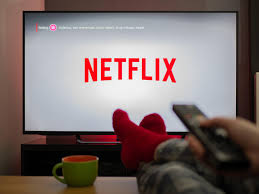

A Netflix é uma das maiores plataformas de streaming de vídeo do mundo, revolucionando a forma como consumimos entretenimento. Lançada em 1997 como um serviço de aluguel de DVDs por correio, a empresa rapidamente se adaptou às mudanças tecnológicas e se tornou um gigante no mercado de streaming digital. Com uma vasta biblioteca que inclui uma variedade de filmes, séries, documentários e produções originais, a Netflix oferece uma experiência personalizada e acessível a partir de qualquer dispositivo conectado à internet. Seu compromisso com a inovação e a qualidade, aliado a uma estratégia agressiva de investimento em conteúdo original, faz da Netflix uma referência indispensável no universo do entretenimento moderno.

Sobre
A história do grande app
Fundada em 1997 por Reed Hastings e Marc Randolph, começou como uma locadora de DVDs por correio, revolucionando a forma como as pessoas alugavam filmes. O conceito inicial foi inspirado na dificuldade que Hastings teve ao devolver uma fita de aluguel com atraso, o que gerou a ideia de criar um serviço de aluguel sem taxas de atraso e sem necessidade de retornar os filmes fisicamente.
Nos primeiros anos, a Netflix focou em criar um catálogo diversificado de DVDs e um sistema de recomendação baseado em algoritmos para sugerir filmes aos usuários. O serviço permitia que os clientes alugassem quantos DVDs quisessem, sem prazo para devolução, e os enviassem de volta pelo correio quando estivessem prontos para devolver.
A grande virada para a Netflix ocorreu em 2007, quando a empresa lançou seu serviço de streaming online. Essa mudança permitiu que os assinantes assistissem a filmes e programas de TV instantaneamente pela internet, sem a necessidade de esperar pelo correio. Essa inovação foi um marco na transformação da forma como o conteúdo audiovisual é consumido, marcando o início da popularização do streaming e mudando para sempre a indústria do entretenimento.
Em 2010, a Netflix começou a expandir internacionalmente, começando pelo Canadá e depois se expandindo para vários países ao redor do mundo. Esse movimento global consolidou a empresa como um dos principais serviços de streaming a nível mundial.
Além de ser pioneira no streaming, a Netflix também se destacou como produtora de conteúdo original. Em 2013, a empresa lançou sua primeira série original, "House of Cards", que foi aclamada pela crítica e marcou o início de uma nova era na produção de conteúdo. Desde então, a Netflix produziu uma vasta gama de séries, filmes e documentários originais, incluindo sucessos como "Stranger Things", "The Crown", "Orange is the New Black" e "The Witcher". A estratégia de criar e investir em conteúdo original ajudou a Netflix a se diferenciar em um mercado competitivo e a atrair uma base de assinantes cada vez maior.
Com o tempo, a Netflix também enfrentou a crescente competição de outras plataformas de streaming e serviços de entretenimento. Contudo, a empresa se manteve à frente, investindo em inovação tecnológica, na personalização da experiência do usuário e na expansão de seu portfólio de conteúdo.
Hoje, a Netflix é um gigante do entretenimento digital, com milhões de assinantes em todo o mundo e uma vasta biblioteca de conteúdo original e licenciado. A história da Netflix é um exemplo notável de como uma ideia inovadora pode transformar uma indústria e mudar a maneira como o mundo consome mídia.
Reed Hastings: O Visionário por Trás da Netflix
Reed Hastings, nascido em 8 de outubro de 1960 em Boston, Massachusetts, é o cofundador da Netflix e uma figura chave na transformação da indústria do entretenimento digital. Hastings estudou Matemática na Bowdoin College e obteve um mestrado em Ciência da Computação na Stanford University. Antes da Netflix, fundou a Pure Software, que foi vendida para a Rational Software em 1997, fornecendo a base para seus futuros empreendimentos.
Em 1997, Hastings co-fundou a Netflix com Marc Randolph, inicialmente como um serviço de aluguel de DVDs por correio. A ideia surgiu da frustração de Hastings com taxas de atraso de locadoras tradicionais. O modelo inovador da Netflix permitia aos usuários alugar DVDs sem taxas adicionais e devolvê-los pelo correio, transformando a experiência de locação de filmes.
A grande mudança ocorreu em 2007, quando a Netflix lançou seu serviço de streaming online. Esta inovação permitiu que os assinantes assistissem a filmes e séries instantaneamente pela internet, estabelecendo a Netflix como um pioneiro no mercado de streaming. Em 2013, a empresa deu um passo ainda maior ao começar a produzir conteúdo original, com a estreia de "House of Cards", o que consolidou seu papel como uma importante produtora de entretenimento.
Reed Hastings é reconhecido por sua visão estratégica e capacidade de antecipar mudanças no mercado. Sob sua liderança, a Netflix se expandiu globalmente e revolucionou a forma como consumimos mídia. Além de seu sucesso empresarial, Hastings está envolvido em iniciativas filantrópicas e reformas educacionais, refletindo seu compromisso com a inovação e o impacto social positivo.
Recomendações
Serviços oferecidos
1. Variedade de Conteúdos e Planos de Assinatura
A Netflix é uma plataforma de streaming global que se destaca pela vasta gama de conteúdos oferecidos. Com um catálogo que inclui filmes, séries, documentários e conteúdos originais, a Netflix atende a uma ampla variedade de gostos e interesses. Os assinantes podem escolher entre diferentes planos de assinatura, que variam em termos de qualidade de vídeo e número de telas simultâneas. Os planos incluem o Básico, que oferece qualidade padrão e acesso a uma tela por vez, o Padrão, que permite streaming em HD em até duas telas simultaneamente, e o Premium, que disponibiliza conteúdo em 4K Ultra HD e permite até quatro telas simultâneas. A flexibilidade nos planos garante que cada usuário possa escolher a opção que melhor se adapta às suas necessidades e preferências.
2. Conteúdos Originais e Exclusivos
A Netflix é conhecida por sua crescente oferta de conteúdos originais, que têm se tornado um dos maiores atrativos da plataforma. Séries, filmes e documentários produzidos exclusivamente para a Netflix, como "Stranger Things", "The Crown" e "The Witcher", oferecem aos assinantes uma experiência única e diversificada. Esses conteúdos exclusivos são frequentemente aclamados pela crítica e conquistam uma base de fãs dedicada. A empresa investe pesadamente em produções originais, buscando sempre trazer inovações e histórias cativantes que não estão disponíveis em nenhuma outra plataforma de streaming. Esse compromisso com a criação de conteúdo próprio fortalece a posição da Netflix como líder no mercado de entretenimento digital.
3. Recursos de Personalização e Interface do Usuário
A Netflix não só oferece uma ampla gama de conteúdos, mas também prioriza a experiência do usuário com uma interface intuitiva e recursos de personalização avançados. A plataforma utiliza algoritmos sofisticados para recomendar filmes e séries com base no histórico de visualização e nas preferências do usuário. Além disso, a Netflix permite a criação de perfis separados para diferentes membros da família, cada um com suas próprias recomendações e listas de conteúdos. A interface é projetada para facilitar a navegação e a busca por novos títulos, com categorias personalizáveis e uma função de pesquisa eficiente. Os assinantes podem também baixar conteúdos para assistir offline, garantindo que o entretenimento esteja sempre ao alcance, mesmo sem uma conexão com a internet.
Assinaturas
Plano Básico:
Preço: R$ 34,90 por mês.
Características: Permite assistir em 1 tela por vez em definição padrão (SD).
Plano Padrão:
Preço: R$ 46,90 por mês.
Características: Permite assistir em até 2 telas simultaneamente em alta definição (HD).
Plano Premium:
Preço: R$ 60,90 por mês.
Características: Permite assistir em até 4 telas simultaneamente e oferece conteúdo em ultra alta definição (4K UHD), quando disponível.